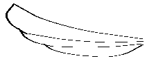

7 More Pict Constructors
7.1 Dingbats
函数
w : real? h : real? color : (or/c string? (is-a?/c color%)) = "gray"
style :
(listof (or/c 'square 'nw 'ne 'sw 'se 'wide)) = null
Supplying 'nw (northwest), 'ne (northeast), 'sw (southwest), or 'se (southeast) in style extends the cloud to better cover the corner within its bounding box in the corresponding direction. The 'square style is a shorthand for all of those combined. The 'wide style increases the number of bumps along the cloud’s top and bottom edges.

修改于package pict-lib的1.6版本：Added style.

函数
(standard-fish w h [ #:direction direction #:color color #:eye-color eye-color #:open-mouth open-mouth]) → pict? w : real? h : real? direction : (or/c 'left 'right) = 'left color : (or/c string? (is-a?/c color%)) = "blue" eye-color : (or/c string? (is-a?/c color%) #f) = "black" open-mouth : (or/c boolean? real?) = #f
The open-mouth argument can be either #f (mouth closed), #t (mouth fully open), or a number: 0.0 is closed, 1.0 is fully open, and numbers in between are partially open.
> (standard-fish 100 50)
> (standard-fish 100 50 #:direction 'right #:color "chocolate")
> (standard-fish 100 50 #:eye-color "saddlebrown" #:color "salmon")
> (standard-fish 100 50 #:open-mouth #t #:color "olive")


函数
(jack-o-lantern size [ pumpkin-color face-color stem-color]) → pict? size : real? pumpkin-color : (or/c string? (is-a?/c color%)) = "orange" face-color : (or/c string? (is-a?/c color%)) = "black" stem-color : (or/c string? (is-a?/c color%)) = "brown"
> (jack-o-lantern 100) > (jack-o-lantern 100 "cadet blue" "khaki" "salmon")
函数
(angel-wing w h left?) → pict?
w : real? h : real? left? : any/c
> (angel-wing 100 40 #f)
> (angel-wing 100 40 #t) 
The style can include any of the following:
'plt —
include a Racket logo on the machine’s screen 'binary —
put 1s and 0s on the machine’s screen 'devil —
like 'binary, and also give the machine horns and a tail
> (desktop-machine 1)
> (desktop-machine 1 '(devil plt)) > (desktop-machine 1 '(plt binary))

函数
(thermometer [ #:height-% height-% #:color-% color-% #:ticks ticks #:start-color start-color #:end-color end-color #:top-circle-diameter top-circle-diameter #:bottom-circle-diameter bottom-circle-diameter #:stem-height stem-height #:mercury-inset mercury-inset]) → pict? height-% : (between/c 0 1) = 1 color-% : (between/c 0 1) = height-% ticks : exact-nonnegative-integer? = 4 start-color : (or/c string? (is-a?/c color%)) = "lightblue" end-color : (or/c string? (is-a?/c color%)) = "lightcoral" top-circle-diameter : (>/c 0) = 40 bottom-circle-diameter : (>/c 0) = 80 stem-height : (>/c 0) = 180 mercury-inset : (>/c 0) = 8
The mercury is drawn the same way, but by creating the three components inset from the versions that draw the boundary of the thermometer. This inset is controlled by the mercury-inset argument.
The height of the mercury in the thermometer is controlled by the height-% argument. Its color is interpolated between the start-color and end-color, as determined by the color-% argument.
Finally, some number of ticks are drawn, based on the ticks argument.
> (thermometer #:stem-height 90 #:bottom-circle-diameter 40 #:top-circle-diameter 20 #:mercury-inset 4)
7.2 Balloon Annotations
| (require pict/balloon) | package： pict-lib |
函数
(wrap-balloon pict spike dx dy [ color corner-radius]) → balloon? pict : pict? spike : (or/c 'n 's 'e 'w 'ne 'se 'sw 'nw) dx : real? dy : real? color : (or/c string? (is-a?/c color%)) = balloon-color corner-radius : (and/c real? (not/c negative?)) = 32
The spike argument indicates the corner from which a spike protrudes from the balloon (i.e., the spike that points to whatever the balloon is about). For example, 'n means “north,”, which is a spike in the top middle of the balloon.
The dx and dy arguments specify how far the spike should protrude. For a 'w spike, dx should be negative, etc.
The color argument is the background color for the balloon.
The corner-radius argument determines the radius of the circle used to round the balloon’s corners. As usual, if it is less than 1, then it acts as a ratio of the balloon’s width or height.
The result is a balloon, not a pict. The balloon-pict function extracts a pict whose bounding box does not include the spike, but includes the rest of the image, and the balloon-point-x and balloon-point-y functions extract the location of the spike point. More typically, the pin-balloon function is used to add a balloon to a pict.
函数
(pip-wrap-balloon pict spike dx dy [ color corner-radius]) → pict? pict : pict? spike : (or/c 'n 's 'e 'w 'ne 'se 'sw 'nw) dx : real? dy : real? color : (or/c string? (is-a?/c color%)) = balloon-color corner-radius : (and/c real? (not/c negative?)) = 32
函数
(pin-balloon balloon base x y) → pict?
balloon : balloon? base : pict? x : real? y : real? (pin-balloon balloon base at-pict find) → pict? balloon : balloon? base : pict? at-pict : pict-path? find : (pict? pict-path? . -> . (values real? real?))
The resulting pict has the same bounding box, descent, and ascent as base, even if the balloon extends beyond the bounding box.
> (define a-pict (standard-fish 70 40))
> (pin-balloon (balloon 40 30 5 'se 5 5) (cc-superimpose (blank 300 150) a-pict) a-pict lc-find)
> (pin-balloon (wrap-balloon (text "Hello!") 'sw -5 3) (cc-superimpose (blank 300 150) a-pict) a-pict rt-find)
函数
w : real? h : real? corner-radius : (and/c real? (not/c negative?)) spike : (or/c 'n 's 'e 'w 'ne 'se 'sw 'nw) dx : real? dy : real? color : (or/c string? (is-a?/c color%)) = balloon-color
函数
v : any/c (make-balloon pict x y) → balloon? pict : pict? x : real? y : real? (balloon-pict balloon) → pict? balloon : balloon? (balloon-point-x balloon) → real? balloon : balloon? (balloon-point-y balloon) → real? balloon : balloon?
值
balloon-color : (or/c string? (is-a?/c color%))
The default background color for a balloon.
parameter
(balloon-enable-3d on?) → void? on? : any/c
7.3 Face
值
'unhappy — |
|
|
'sortof-unhappy — |
| |
'sortof-happy — |
|
|
'happy — |
| |
'happier — |
|
|
'embarrassed — |
| |
'badly-embarrassed — |
|
|
'unhappier — |
|
|
'happiest — |
| |
'unhappiest — |
|
|
'mad — |
| |
'mean — |
| |
'surprised — |
|


函数
(face* eyebrow-kind mouth-kind frown? color eye-inset eyebrow-dy pupil-dx pupil-dy [ #:eyebrow-shading? eyebrow-on? #:mouth-shading? mouth-on? #:eye-shading? eye-on? #:tongue-shading? tongue-on? #:face-background-shading? face-bg-on? #:teeth? teeth-on?]) → pict? eyebrow-kind : (or/c 'none 'normal 'worried 'angry)
mouth-kind :
(or/c 'plain 'smaller 'narrow 'medium 'large 'huge 'grimace 'oh 'tongue) frown? : any/c color : (or/c string (is-a?/c color%)) eye-inset : real? eyebrow-dy : real? pupil-dx : real? pupil-dy : real? eyebrow-on? : any/c = #t mouth-on? : any/c = #t eye-on? : any/c = #t tongue-on? : any/c = #t face-bg-on? : any/c = #t teeth-on? : any/c = #t
eyebrow-kind determines the eyebrow shape.
mouth-kind determines the mouth shape, combined with frown?.
frown? determines whether the mouth is up or down.
color determines the face color.
eye-inset adjusts the eye size; recommend values are between 0 and 10.
eyebrow-dy adjusts the eyebrows; recommend values: between -5 and 5.
pupil-dx adjusts the pupil; recommend values are between -10 and 10.
pupil-dy adjusts the pupil; recommend values are between -15 and 15.
The #:eyebrow-shading? through #:face-background-shading? arguments control whether a shading is used for on a particular feature in the face (shading tends to look worse than just anti-aliasing when the face is small). The #:teeth? argument controls the visibility of the teeth for some mouth shapes.
7.4 Flash
| (require pict/flash) | package： pict-lib |
函数
(filled-flash width height [ n-points spike-fraction rotation]) → pict? width : real? height : real? n-points : exact-positive-integer? = 10 spike-fraction : (real-in 0 1) = 0.25 rotation : real? = 0
The height and width arguments determine the size of the oval in which the flash is drawn, prior to rotation. The actual height and width may be smaller if points is not a multiple of 4, and the actual height and width will be different if the flash is rotated.
The n-points argument determines the number of points on the flash.
The spike-fraction argument determines how big the flash spikes are compared to the bounding oval.
The rotation argument specifies an angle in radians for counter-clockwise rotation.
The flash is drawn in the default color.
> (filled-flash 100 50) > (filled-flash 100 50 8 0.25 (/ pi 2))
函数
(outline-flash width height [ n-points spike-fraction rotation]) → pict? width : real? height : real? n-points : exact-positive-integer? = 10 spike-fraction : (real-in 0 1) = 0.25 rotation : real? = 0
> (outline-flash 100 50)
> (outline-flash 100 50 8 0.25 (/ pi 2))


7.5 Typesetting Racket Code
函数
(typeset-code stx) → pict?
stx : syntax?
Beware that if you use read-syntax on a file port, you may have to turn on line counting via port-count-lines! for the code to typeset properly.
Normally, typeset-code is used through the code syntactic form, which works properly with compilation, and that escapes to pict-producing code via unsyntax. See also define-code.
Embedded picts within stx are used directly. Row elements are combined using and operator like htl-append, so use code-align (see below) as necessary to add an ascent to ascentless picts. More precisely, creation of a line of code uses pict-last to determine the end point of the element most recently added to a line; the main effect is that closing parentheses are attached in the right place when a multi-line pict is embedded in stx.
An identifier that starts with _ is italicized in the pict, and the _ is dropped, unless the code-italic-underscore-enabled parameter is set to #f. Also, unless code-scripts-enabled is set to #f, _ and ^ in the middle of a word create superscripts and subscripts, respectively (like TeX); for example foo^4_ok is displayed as the identifier foo with a 4 superscript and an ok subscript.
Further, uses of certain identifiers in stx typeset specially:
(code:comment s ...) —
produces a comment block, with each s on its own line, where each s must be a string or a pict. (code:line datum ...) —
typesets the datum sequence, which is mostly useful for the top-level sequence, since typeset-code accepts only one argument. (code:contract datum ...) —
like code:line, but every datum is colored as a comment, and a ; is prefixed to every line. (code:template datum ...) —
like code:line, but a ; is prefixed to every line. $ —
typesets as a vertical bar (for no particularly good reason).
语法
(code datum ...)
For more information, see typeset-code and define-code, since code is defined as
> (code (+ 1 2))
> (code (+ 1 #,(+ 1 1)))
> (code (+ 1 #,(frame (code 2)))) > (define-syntax two (make-code-transformer #'(code 2))) > (code (+ 1 two))


parameter
(current-code-font style) → void? style : text-style/c
parameter
(current-code-tt) → (string? . -> . pict?)
(current-code-tt proc) → void? proc : (string? . -> . pict?)
(lambda (s) (text s (current-code-font) ((get-current-code-font-size))))
This procedure is not used to typeset subscripts or other items that require font changes, where current-code-font is used directly.
parameter
(get-current-code-font-size) → (-> exact-nonnegative-integer?)
(get-current-code-font-size proc) → void? proc : (-> exact-nonnegative-integer?)
parameter
(current-code-line-sep amt) → void? amt : real?
parameter
(current-comment-color) → (or/c string? (is-a?/c color%))
(current-comment-color color) → void? color : (or/c string? (is-a?/c color%))
parameter
(current-keyword-color) → (or/c string? (is-a?/c color%))
(current-keyword-color color) → void? color : (or/c string? (is-a?/c color%))
parameter
(current-id-color) → (or/c string? (is-a?/c color%))
(current-id-color color) → void? color : (or/c string? (is-a?/c color%))
parameter
(current-literal-color) → (or/c string? (is-a?/c color%))
(current-literal-color color) → void? color : (or/c string? (is-a?/c color%))
parameter
(current-const-color) → (or/c string? (is-a?/c color%))
(current-const-color color) → void? color : (or/c string? (is-a?/c color%))
parameter
(current-base-color) → (or/c string? (is-a?/c color%))
(current-base-color color) → void? color : (or/c string? (is-a?/c color%))
parameter
(current-reader-forms syms) → void? syms : (listof symbol?)
函数
(code-align pict) → pict?
pict : pict?
parameter
(current-keyword-list names) → void? names : (listof string?)
parameter
(current-const-list) → (listof string?)
(current-const-list names) → void? names : (listof string?)
parameter
(current-literal-list names) → void? names : (listof string?)
parameter
(code-colorize-enabled on?) → void? on? : any/c
parameter
(code-colorize-quote-enabled on?) → void? on? : any/c
parameter
(code-italic-underscore-enabled on?) → void? on? : any/c
parameter
(code-scripts-enabled on?) → void? on? : any/c
语法
(define-code code-id typeset-code-id)
(define-code code-id typeset-code-id escape-id)
The resulting code-id syntactic form takes a sequence of datums:
(code-id datum ...)
It produces a pict that typesets the sequence. Source-location information for the datum determines the layout of code in the resulting pict. The code-id is expanded in such a way that source location is preserved during compilation (so typeset-code-id receives a syntax object with source locations intact).
If a datum contains (escape-id expr)—
If a datum contains (transform-id datum ...) or transform-id for a transform-id that is bound as syntax to a code transformer, then the (transform-id datum ...) or transform-id may be replaced with an escaped expression, depending on the code transformer’s result.
函数
(make-code-transformer proc-or-stx) → code-transformer?
proc-or-stx :
(or/c (syntax? . -> . (or/c syntax? #f)) syntax?)
值
函数
(code-transformer? v) → boolean?
v : any/c
For code transformer created with (make-code-transformer proc), proc takes a syntax object representing the use of an identifier bound to the transformer, and it produces an expression whose value replaces the identifier use within a code form or a form defined via define-code. Like a macro transformer, a code transformer is triggered either by a use of the bound identifier in an “application” position, in which case the transformer receives the entire “application” form, or the identifier by itself can also trigger the transformer. The code transformer’s proc can return #f, in which case the use of the identifier is left untransformed; if the identifier was used in an “application” position, the transformer proc will be called again for the identifier use by itself.
A code transformer produced by (make-code-transformer stx) is equivalent to
(make-code-transformer (lambda (use-stx) (if (identifier? use-stx) stx #f)))
A structure type with the prop:code-transformer property implements a code transformer. The property value must be a procedure of one argument, which receives the structure and returns a procedure that is like a proc passed to make-code-transformer, except that the property value takes the structure instance as an argument before the syntax object to transform.
The code-transformer? predicate returns #t for a value produced by make-code-transformer or for an instance of a structure type with the prop:code-transformer property, #f otherwise.
> (let-syntax ([bag (make-code-transformer #'(code hat))] [copy (make-code-transformer (syntax-rules () [(_ c) (code (* 2 c))]))]) (inset (frame (code ((copy cat) in the bag))) 2))
语法
(define-exec-code (pict-id runnable-id string-id) datum ...)
Meanwhile, runnable-id is bound to a syntax object that wraps the datums in a begin. In this case, _s are removed from the datums, but not the following expression. Thus, an _ identifier is used to comment out an expression from the pict, but have it present in the syntax object for evaluation.
The string-id is bound to a string representation of the code that is in the pict. This string is useful for copying to the clipboard with (send the-clipboard set-clipboard-string string-id 0).
语法
(define-exec-code/scale scale-expr (pict-id runnable-id string-id) datum ...)
值
comment-color : (or/c string? (is-a?/c color%))
值
keyword-color : (or/c string? (is-a?/c color%))
值
值
literal-color : (or/c string? (is-a?/c color%))
函数
(code-pict-bottom-line-pict pict) → (or/c pict? #f)
pict : pict?
函数
(pict->code-pict pict bl-pict) → pict?
pict : pict? bl-pict : (or/c pict? #f)
7.5.1 Codeblocks
函数
(codeblock-pict code-string [ #:keep-lang-line? keep?]) → pict? code-string : string? keep? : any/c = #t
Unlike code, codeblock-pict formats and colors based on the code’s language’s lexer, which makes it suitable for use with code that doesn’t use Racket syntax.
When keep? is #f, the first #lang line is removed from the pict.
> (codeblock-pict #:keep-lang-line? #f (string-join '("#lang 2d racket" "(require 2d/cond)" "(define (same? a b)" " #2dcond" " ╔═════════════╦═══════════════════════╦═════════════╗" " ║ ║ (pair? a) ║ (number? a) ║" " ╠═════════════╬═══════════════════════╬═════════════╣" " ║ (pair? b) ║ (and (same? (car a) ║ #f ║" " ║ ║ (car b)) ║ ║" " ║ ║ (same? (cdr a) ║ ║" " ║ ║ (cdr b))) ║ ║" " ╠═════════════╬═══════════════════════╬═════════════╣" " ║ (number? b) ║ #f ║ (= a b) ║" " ╚═════════════╩═══════════════════════╩═════════════╝)") "\n"))
parameter
→ (-> symbol? (or/c string? (is-a?/c color%))) (current-token-class->color to-color) → void? to-color : (-> symbol? (or/c string? (is-a?/c color%)))
The default value maps the standard set of token classes (as recognized by DrRacket) to the corresponding colors used by code. Specifically, it maps
'no-color, 'parenthesis, and 'hash-colon-keyword to (current-base-color),
'symbol to (current-id-color),
'keyword to (current-keyword-color),
'string and 'constant to (current-literal-color),
'comment to (current-comment-color),
'white-space to "white",
and everything else to "black".
It is usually sufficient to adjust the individual color parameters also used by code, but current-token-class->color allows for more fine-grained control over how codeblock-pict interprets token classes.
添加于package pict-lib的1.8版本。